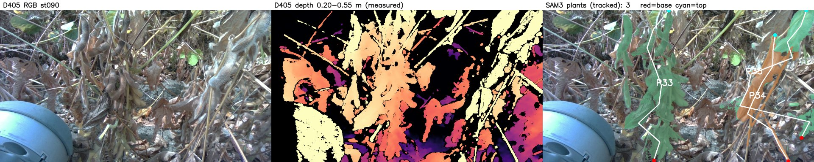
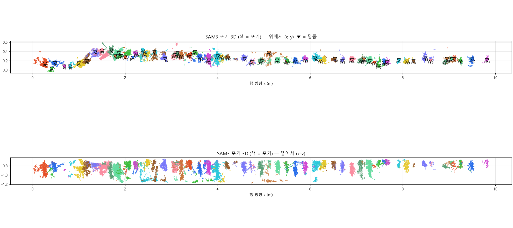
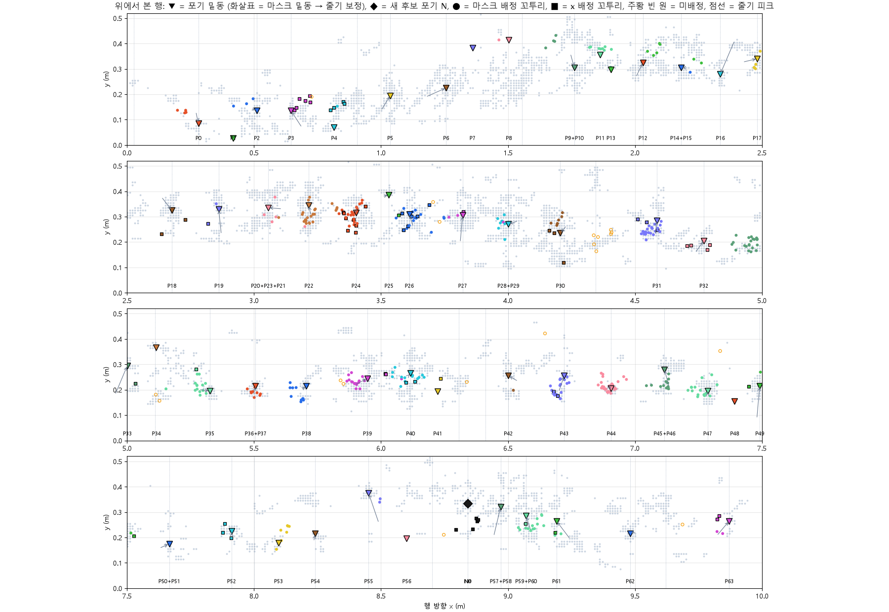
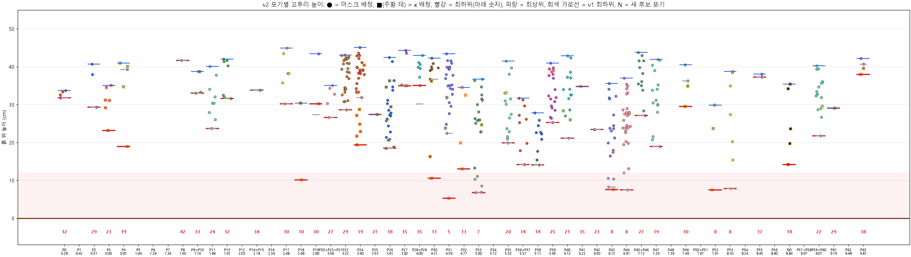
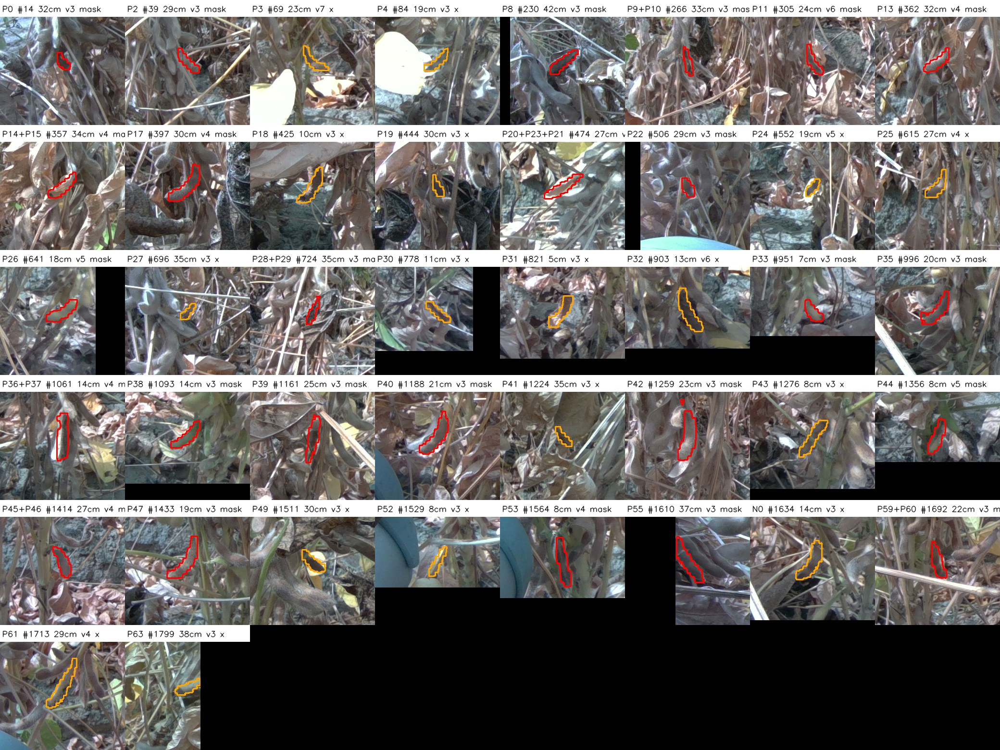
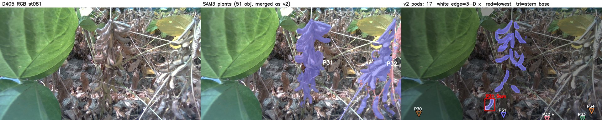
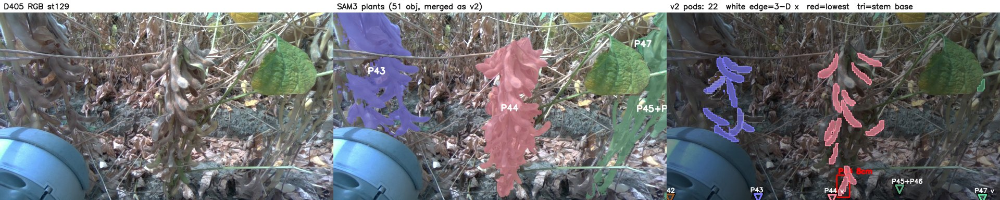

작성 2026-10-12 · 데이터 2026-10-12 콩 포장 r03 행 내부 주행 (D405, 0.33 m 근접, R8) 관련 문서: REPORT_KO.html (촬영 → RTK → pose → 3D 행 → 20 cm 구간 착협고)
채택 결과 = SAM3 추적 객체 51개(10개씩 나눠 추적) + v2(줄기 밑동 보정 + 3D 위치 배정). 추적 객체 16개 버전은 5절에서 비교한다.
| 단계 | 한 일 | 핵심 결과 |
|---|---|---|
| 1 포기 분할 | SAM3 예시 상자 2개(st090) → 동영상 추적 + 새 포기 찾기(2 → 16 → 51개) → 10개씩 나눠 최종 추적 → D405 깊이로 3D 밑동 위치 보정 | 약 9.4 m 행에서 64포기, 188지점 중 187지점에서 포기가 잡힘 |
| 2 꼬투리 배정 (마스크) | PodNet 꼬투리(4_pods)를 포기 마스크에 배정, 3D 병합, 3프레임 이상만 유효 |
유효 꼬투리 80 %가 마스크로 배정됨 |
| 3 v2 보정 | 흙 위 3–10 cm 줄기로 밑동 보정, 같은 줄기의 포기 합침, 마스크 밖 꼬투리는 x ±8 cm 안 가장 가까운 밑동에 배정 | 55포기(SAM3 54 + 새 후보 1). 유효 꼬투리 배정 95 %. 42포기에서 값이 나옴 |
| 결과 | 포기별 최하위·최상위 유효 꼬투리의 흙 위 높이 | 최하위 착협고 중앙값 23.5 cm (5.3–41.7 cm), 10 cm 미만 6포기, 12 cm 미만 8포기. 최상위 중앙값 40.2 cm(하한값) |
4_pods/lowest_pods.csv)에서 이미 육안으로 꼬투리임을 확인한 것이고, 11개는 아직 확인하지 않았다.5_plants/plant_video_b51.py → 5_plants/plant_video_b51/)1002 행 10 방법(REPORT_ROW10_PLANT_POD_KO 2절)을 D405 세션에 맞게 옮겼다. 1002와 달리 DA3 없이 D405 센서 깊이(0.15–0.6 m)를 그대로 쓴다.
objects.npz)와 묶음 결과(tracks/)는 저장해 두어, 끊겨도 이어서 돌릴 수 있다.icp_lf)로 행 좌표계에 올린다. 포기는 땅에 고정돼 있으므로 밑동 x(마스크 하위 15 % 점의 x 중앙값)는 움직이면 안 된다.
keypoints_segpose.json). R8 근접 영상이라 위아래가 화면에서 잘린다.3D란: D405는 스테레오 깊이 카메라라 화소마다 카메라까지의 거리를 잰다. 화소 위치와 거리, 카메라 내부 보정값으로 카메라 기준 3D 좌표를 구하고, 사진마다 카메라 pose(ICP + RTK + 중력)로 하나의 행 좌표계(x = 줄 방향, y = 옆, z = 위)에 옮긴다. 높이는 그 자리 흙 높이를 뺀 값이다(4_pods/soil_grid.npz).
| 라운드 | 추적 객체 | 새로 찾음 | 포기가 잡힌 지점 |
|---|---|---|---|
| 0 | 2 → 16 | 14 | 139 / 188 |
| 1 | 16 → 51 | 35 | 187 / 188 |
| 2 (전파만, 10개씩 6묶음) | 51 | 0 | 188 / 188 |
plant_traits.csv, summary.json)
st090 (기준 지점). 오른쪽 칸 색 = 포기, 흰 선 = 줄기 선, 빨강 = 밑동, 하늘색 = 꼭대기. 왼쪽 아래 파란 물체는 로봇 고관절 덮개다.

5_plants/plant_pods.py, run_b51_pods.py → 5_plants/plant_pods_b51/)4_pods의 PodNet 검출 3,454개(D405 깊이로 3D, 크기 필터 통과)를 쓴다.plant_video_b51/masks/stNNN.npz)와 겹쳐 본다. 30 % 이상 한 포기에 덮이면 그 포기로 배정한다.4_pods/pod_zone.py와 같은 규칙). 꼬투리의 포기 = 그 검출들의 다수결이다. 3프레임 이상이면 유효로 본다.결과: 검출 3,454개 중 1,790개(52 %)가 포기에 배정됐다. 유효 꼬투리 416개 중 332개(80 %)가 배정됐다. 착협고가 나온 포기는 35 / 64이고, 최하위 착협고 중앙값은 27.4 cm다. 아래 높이별 표처럼 낮은 꼬투리일수록 마스크에 덜 덮여 이 값은 위로 치우친다.
5_plants/plant_pods_v2.py, run_b51_pods.py → 5_plants/plant_pods_v2_b51/)3_cloud/row_icp_lf_3mm.ply)에서 흙 위 2–14 cm 점의 법선을 구한다. 수직면(|nz| < 0.4)만 남긴다. 흙과 낙엽은 평평해서 빠진다. 1 cm 격자 칸 중 3–5 / 5–7.5 / 7.5–10 cm 세 층 모두에 수직면 점이 있는 칸을 줄기 후보로 본다. 행 방향(x)으로 후보 칸의 밀도(1.5 cm 가우시안)를 구하고, 8 cm 이상 떨어진 봉우리를 줄기로 잡는다 → 줄기 56개 (stems.csv).4_pods/lowest_pods.csv)을 그대로 쓴다. 꼬투리 번호가 같다. '제외' 5개(#451, #702, #1078, #1242, #1588)는 뺐다. 뺀 결과 유효 꼬투리는 411개다.
회색 = 줄기 후보 칸, 점선 = 줄기 봉우리, ▼ = 포기 밑동(화살표: 마스크 밑동 → 줄기), ◆ = 새 후보 포기, ● = 마스크로 배정된 꼬투리, ■ = x로 배정된 꼬투리, 주황 빈 원 = 미배정.
plant_pod_height_v2.csv/.json, pods_v2.csv, bases.csv)| 항목 | 마스크만 (2절) | v2 |
|---|---|---|
| 포기 | 64 | 55 (SAM3 54 + 새 후보 1) |
| 유효 꼬투리 중 배정 | 330 / 411 (80 %) | 392 / 411 (95 %) |
| 착협고가 나온 포기 | 35 | 42 |
| 최하위 착협고 중앙값 (최소–최대) | 27.4 cm (6.8–43.0) | 23.5 cm (5.3–41.7) |
| 최하위 10 cm 미만 / 12 cm 미만 | 4 / 4 | 6 / 8 |
| 최상위 꼬투리 중앙값 | 41.0 cm | 40.2 cm |
높이별 배정률:
| 꼬투리 높이 (cm) | < 10 | 10–15 | 15–20 | 20–25 | 25–30 | 30–35 | ≥ 35 |
|---|---|---|---|---|---|---|---|
| 유효 꼬투리 | 9 | 13 | 23 | 50 | 69 | 98 | 149 |
| 마스크만 | 67 % | 69 % | 57 % | 74 % | 74 % | 81 % | 91 % |
| v2 | 100 % | 100 % | 87 % | 92 % | 91 % | 96 % | 99 % |

● = 마스크 배정, ■(주황 테) = x 배정, 빨강 = 최하위(아래 숫자, cm), 파랑 = 최상위, 회색 가로선 = 마스크만 썼을 때의 최하위, N = 새 후보 포기.
포기별 결과 (유효 꼬투리가 있는 42포기):
| 포기 | 밑동 x (m) | 밑동 | 유효 꼬투리 (마스크 / x) | 최하위 (cm) | 다음 낮은 (cm) | 최상위 (cm) | 위 잘림 | 육안 |
|---|---|---|---|---|---|---|---|---|
| P0 | 0.28 | 줄기 | 4 (4 / 0) | 31.8 | 32.6 | 33.7 | 확인 | |
| P2 | 0.51 | 줄기 | 3 (3 / 0) | 29.3 | 38.0 | 40.7 | ● | 확인 |
| P3 | 0.65 | 줄기 | 6 (0 / 6) | 23.2 | 29.2 | 35.1 | ● | 확인 |
| P4 | 0.82 | 마스크 | 5 (1 / 4) | 18.9 | 34.7 | 41.0 | ● | 확인 |
| P8 | 1.50 | 마스크 | 1 (1 / 0) | 41.7 | – | 41.7 | 확인 | |
| P9+P10 | 1.76 | 줄기 | 4 (4 / 0) | 33.0 | 33.3 | 38.8 | 확인 | |
| P11 | 1.86 | 마스크 | 9 (9 / 0) | 23.7 | 26.1 | 40.1 | ● | 확인 |
| P13 | 1.91 | 마스크 | 7 (7 / 0) | 31.6 | 31.9 | 42.0 | ● | 확인 |
| P14+P15 | 2.18 | 줄기 | 1 (1 / 0) | 33.8 | – | 33.8 | 미확인 | |
| P17 | 2.48 | 줄기 | 6 (6 / 0) | 30.2 | 35.8 | 44.9 | ● | 확인 |
| P18 | 2.68 | 줄기 | 2 (0 / 2) | 10.1 | 30.4 | 30.4 | 확인 | |
| P19 | 2.86 | 줄기 | 2 (1 / 1) | 30.2 | 43.4 | 43.4 | ● | 미확인 |
| P20+P23+P21 | 3.06 | 줄기 | 5 (5 / 0) | 26.6 | 30.3 | 35.1 | 확인 | |
| P22 | 3.22 | 줄기 | 26 (26 / 0) | 28.6 | 30.8 | 43.1 | ● | 미확인 |
| P24 | 3.40 | 줄기 | 29 (21 / 8) | 19.4 | 21.7 | 45.1 | ● | 확인 |
| P25 | 3.53 | 줄기 | 1 (0 / 1) | 27.4 | – | 27.4 | ● | 미확인 |
| P26 | 3.61 | 줄기 | 23 (17 / 6) | 18.5 | 18.8 | 42.5 | ● | 미확인 |
| P27 | 3.82 | 줄기 | 4 (3 / 1) | 35.0 | 35.2 | 44.3 | ● | 미확인 |
| P28+P29 | 4.00 | 줄기 | 7 (7 / 0) | 35.1 | 37.3 | 43.0 | ● | 미확인 |
| P30 | 4.21 | 줄기 | 10 (7 / 3) | 10.6 | 16.3 | 42.3 | ● | 확인 |
| P31 | 4.59 | 줄기 | 26 (23 / 3) | 5.3 | 22.5 | 43.4 | ● | 확인 |
| P32 | 4.77 | 줄기 | 4 (0 / 4) | 13.0 | 19.9 | 34.5 | 확인 | |
| P33 | 5.00 | 줄기 | 22 (21 / 1) | 6.8 | 6.9 | 36.7 | ● | 확인 |
| P35 | 5.33 | 줄기 | 15 (14 / 1) | 19.9 | 21.0 | 41.5 | ● | 확인 |
| P36+P37 | 5.51 | 줄기 | 9 (9 / 0) | 14.2 | 17.9 | 31.7 | 미확인 | |
| P38 | 5.71 | 줄기 | 10 (10 / 0) | 14.1 | 15.4 | 27.8 | 확인 | |
| P39 | 5.95 | 줄기 | 19 (17 / 2) | 25.3 | 26.4 | 41.0 | ● | 미확인 |
| P40 | 6.12 | 줄기 | 15 (13 / 2) | 21.1 | 26.0 | 42.9 | ● | 확인 |
| P41 | 6.22 | 마스크 | 1 (0 / 1) | 34.8 | – | 34.8 | ● | 확인 |
| P42 | 6.50 | 줄기 | 1 (1 / 0) | 23.4 | – | 23.4 | 미확인 | |
| P43 | 6.72 | 줄기 | 19 (17 / 2) | 7.6 | 8.3 | 35.6 | ● | 확인 |
| P44 | 6.91 | 줄기 | 27 (27 / 0) | 7.5 | 12.0 | 37.0 | ● | 확인 |
| P45+P46 | 7.12 | 줄기 | 12 (12 / 0) | 27.1 | 28.4 | 43.8 | ● | 확인 |
| P47 | 7.29 | 줄기 | 15 (15 / 0) | 18.9 | 20.8 | 41.9 | ● | 확인 |
| P49 | 7.49 | 줄기 | 4 (2 / 2) | 29.5 | 34.9 | 40.5 | ● | 확인 |
| P52 | 7.91 | 줄기 | 3 (0 / 3) | 7.5 | 23.7 | 29.9 | 확인 | |
| P53 | 8.10 | 마스크 | 7 (7 / 0) | 7.8 | 15.4 | 38.8 | ● | 확인 |
| P55 | 8.45 | 줄기 | 2 (2 / 0) | 37.3 | 38.1 | 38.1 | 확인 | |
| N0 | 8.84 | 줄기 | 5 (0 / 5) | 14.2 | 19.7 | 35.4 | 확인 | |
| P59+P60 | 9.07 | 줄기 | 16 (15 / 1) | 21.8 | 26.7 | 40.3 | ● | 확인 |
| P61 | 9.19 | 줄기 | 1 (0 / 1) | 29.1 | – | 29.1 | 미확인 | |
| P63 | 9.87 | 줄기 | 4 (2 / 2) | 38.0 | 39.6 | 42.2 | 확인 |
밑동: 줄기 = 줄기 봉우리로 보정, 마스크 = 근처에 줄기가 없어 마스크 밑동 그대로. 육안: 확인 = 20 cm 구간 분석에서 꼬투리로 판정된 것.
최하위 착협고 12 cm 미만 포기 (기계수확 참고 기준 아래):
| 포기 | 밑동 x (m) | 최하위 (cm) | 다음 낮은 (cm) | 유효 꼬투리 | 최하위 배정 방식 |
|---|---|---|---|---|---|
| P31 | 4.59 | 5.3 | 22.5 | 26 | x |
| P33 | 5.00 | 6.8 | 6.9 | 22 | 마스크 |
| P44 | 6.91 | 7.5 | 12.0 | 27 | 마스크 |
| P52 | 7.91 | 7.5 | 23.7 | 3 | x |
| P43 | 6.72 | 7.6 | 8.3 | 19 | x |
| P53 | 8.10 | 7.8 | 15.4 | 7 | 마스크 |
| P18 | 2.68 | 10.1 | 30.4 | 2 | x |
| P30 | 4.21 | 10.6 | 16.3 | 10 | x |

v2 결과 영상 (5_plants/make_v2_panels.py → plant_pods_v2_b51/panels/, panels.mp4): 왼쪽 = 원본, 가운데 = SAM3 포기(v2에서 합친 이름), 오른쪽 = 유효 꼬투리를 v2 포기 색으로 칠한 것. 흰 테 = 3D x로 배정된 꼬투리, 회색 윤곽 = 미배정이거나 2프레임 이하, 빨간 상자 = 그 포기의 가장 낮은 꼬투리, ▼ = 줄기로 보정한 밑동(흙 높이로 투영, 'v' = 화면 아래).


가장 정확한 확인은 포장에서 밑동 위치와 흙 → 가장 낮은 꼬투리 높이를 자로 재는 것이다. RTK로 아래 위치를 찾으면 된다. 위경도는 밑동 위치(행 좌표 → WGS84)다. 카메라 레버암을 아직 재지 않아 수 cm 오차가 있을 수 있다. 전체 55포기 위경도는 plant_pods_v2_b51/plant_pod_height_v2.csv의 lat, lon 열에 있다.
| 목적 | 포기 | 밑동 x (m) | 추정 최하위 (cm) | 위도 | 경도 |
|---|---|---|---|---|---|
| 낮은 값 (1개만 낮음) | P31 | 4.59 | 5.3 | 35.49614723 | 128.74006343 |
| 낮은 값 (1개만 낮음) | P52 | 7.91 | 7.5 | 35.49617611 | 128.74005363 |
| 낮은 값 (안정) | P33 | 5.00 | 6.8 | 35.49615079 | 128.74006202 |
| 낮은 값 (안정) | P43 | 6.72 | 7.6 | 35.49616575 | 128.74005704 |
| 중간 | P35 | 5.33 | 19.9 | 35.49615385 | 128.74006206 |
| 중간 | P22 | 3.22 | 28.6 | 35.49613523 | 128.74006709 |
| 높은 값 | P28+P29 | 4.00 | 35.1 | 35.49614221 | 128.74006542 |
| 높은 값 | P63 | 9.87 | 38.0 | 35.49619294 | 128.74004705 |
| 새 후보 포기 확인 | N0 | 8.84 | 14.2 | 35.49618386 | 128.74004955 |
| 합친 포기 확인 (한 포기인가) | P20+P23+P21 | 3.06 | 26.6 | 35.49613388 | 128.74006770 |
20 cm 구간 (REPORT_KO 5.2) |
포기 단위 (51개 + v2) | |
|---|---|---|
| 단위 수 | 45구간 (오검출 5개 육안 제외) | 42포기 (55포기 중) |
| 쓴 유효 꼬투리 | 411개 | 392개 (배정된 것) |
| 최하위 착협고 중앙값 | 21.6 cm | 23.5 cm |
| 10 cm 미만 | 6구간 | 6포기 |
| 낮은 자리 (x, m) | 2.6, 4.4, 4.8, 6.6–7.0, 7.8–8.2 | 2.68, 4.59, 5.00, 6.72, 6.91, 7.91, 8.10 |
처음에는 51개를 한꺼번에 추적하다 GPU 메모리가 넘쳐 16개(2라운드)로 끝낸 버전을 먼저 만들었다(plant_video/, plant_pods/, plant_pods_v2/).
| 항목 | 16개 마스크만 | 16개 + v2 | 51개 마스크만 | 51개 + v2 (채택) |
|---|---|---|---|---|
| 3D 정리 뒤 포기 | 44 | 49 (새 후보 8) | 64 | 55 (새 후보 1) |
| 포기가 잡힌 지점 | 155 / 188 | – | 187 / 188 | – |
| 밑동 간격 중앙값 / 30 cm 넘는 공백 | 18 cm / 7곳 | – | 15 cm / 4곳 | – |
| 유효 꼬투리 배정 | 45 % | 95 % | 80 % | 95 % |
| 착협고가 나온 포기 | 21 | 40 | 35 | 42 |
| 최하위 착협고 중앙값 | 29.2 cm | 23.4 cm | 27.4 cm | 23.5 cm |
| 10 cm 미만 | 3 | 6 | 4 | 6 |
한계
다음 단계
4_pods/lowest_pods.csv 형식으로 추가한다.python 5_plants/plant_video_b51.py # SAM3 포기 추적 51개 (GPU, 약 15분, 끊기면 이어서 실행) → 5_plants/plant_video_b51/
python 5_plants/run_b51_pods.py # plant_pods.py + plant_pods_v2.py를 b51 마스크로 (CPU, 약 2분) → plant_pods_b51/, plant_pods_v2_b51/
python 5_plants/make_v2_panels.py # v2 결과 패널·영상 (CPU, 약 3분) → plant_pods_v2_b51/panels/, panels.mp4
python build_plant_html.py # 이 문서 → REPORT_PLANT_POD_KO.html
16개 버전: 5_plants/plant_video.py → plant_pods.py → plant_pods_v2.py (plant_video/, plant_pods/, plant_pods_v2/)